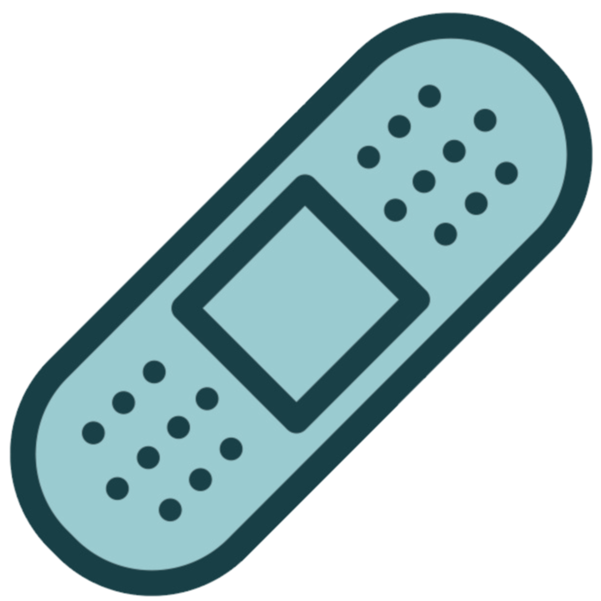
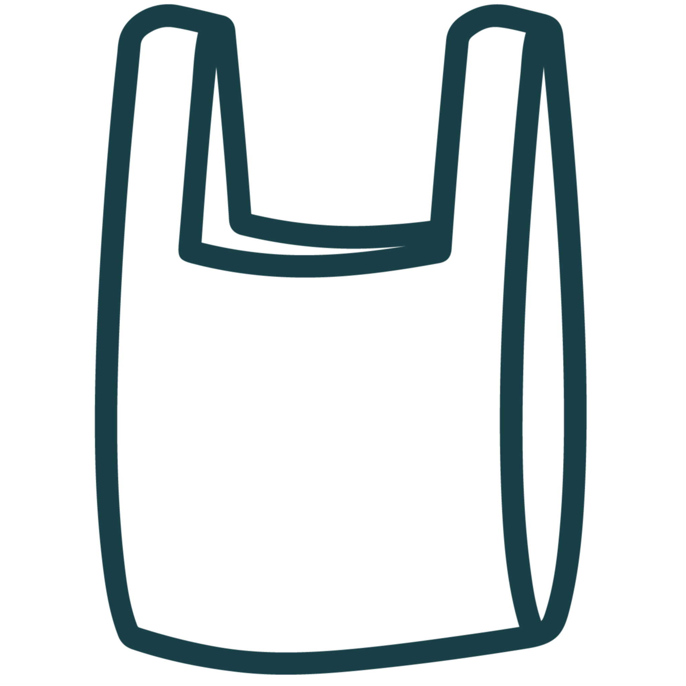
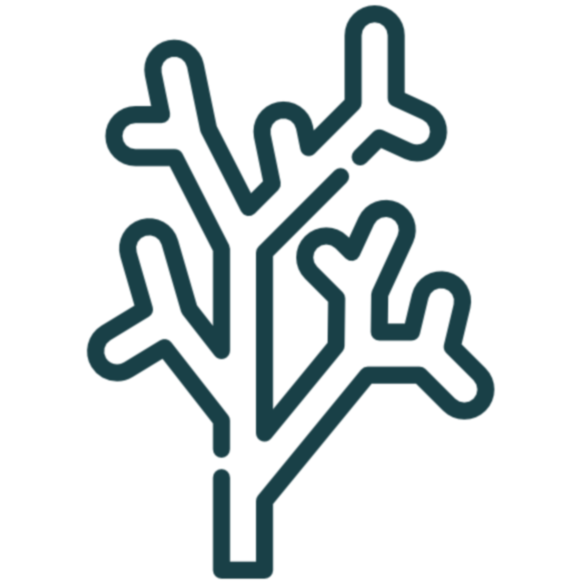
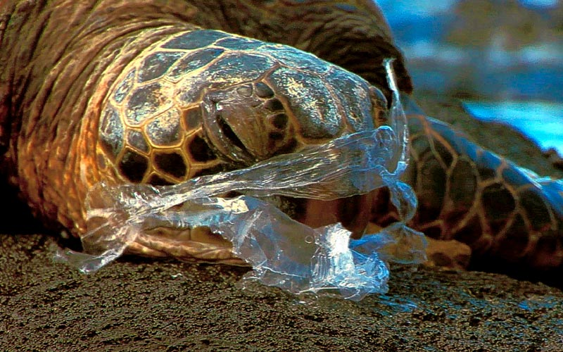

Help us help them
It's only because of generous donors like you that we can continue to ensure that the lives of sea turtles are protected globally. Your gift - no matter the size - is sure to make an impact.
It's only because of generous donors like you that we can continue to ensure that the lives of sea turtles are protected globally. Your gift - no matter the size - is sure to make an impact.



